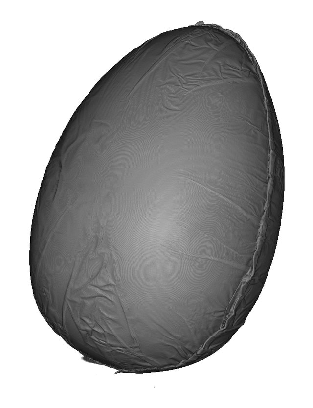
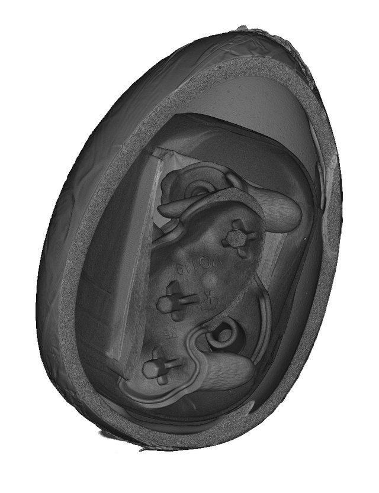
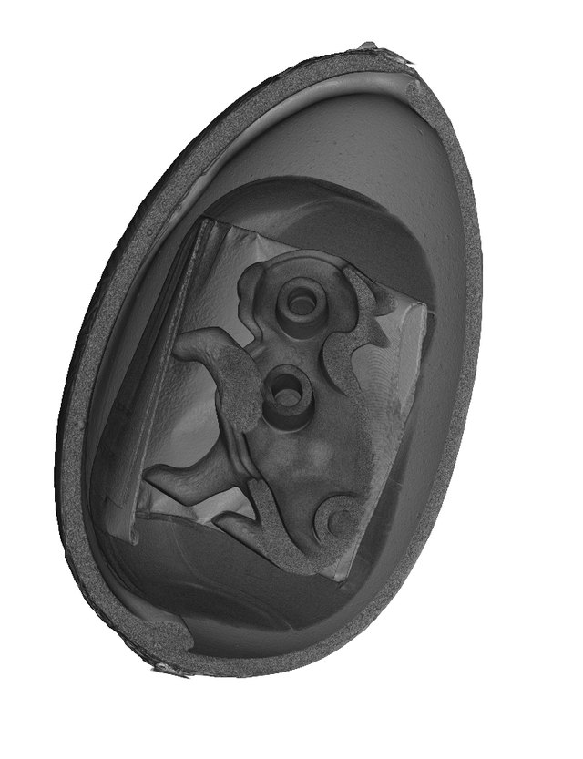
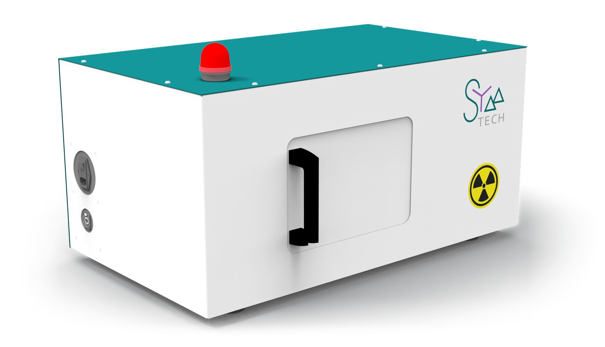
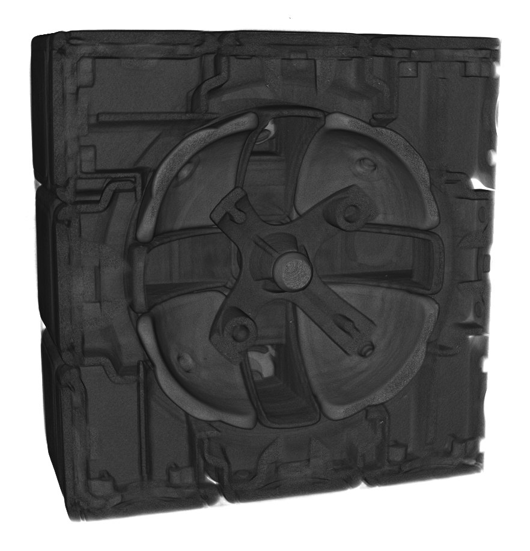
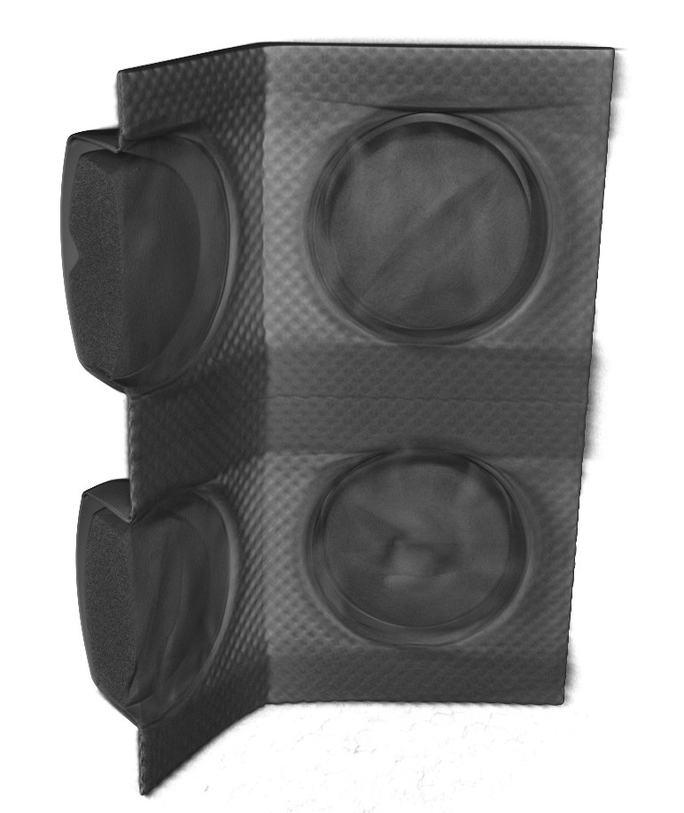
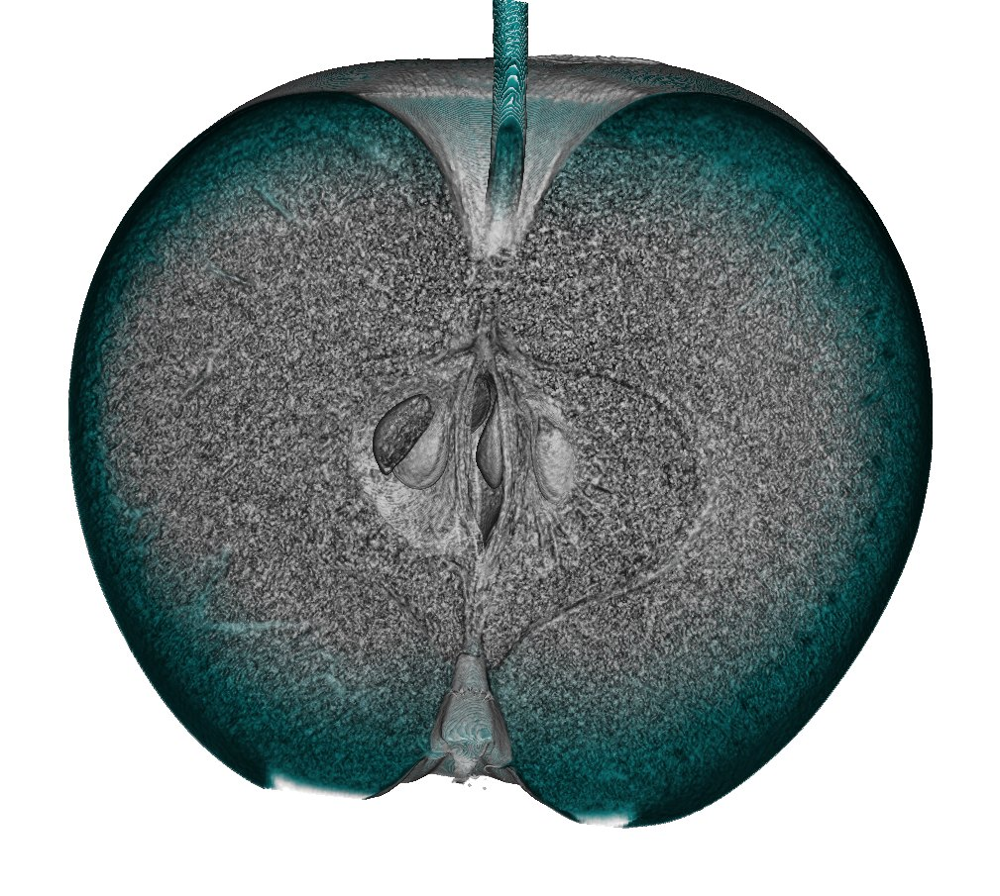
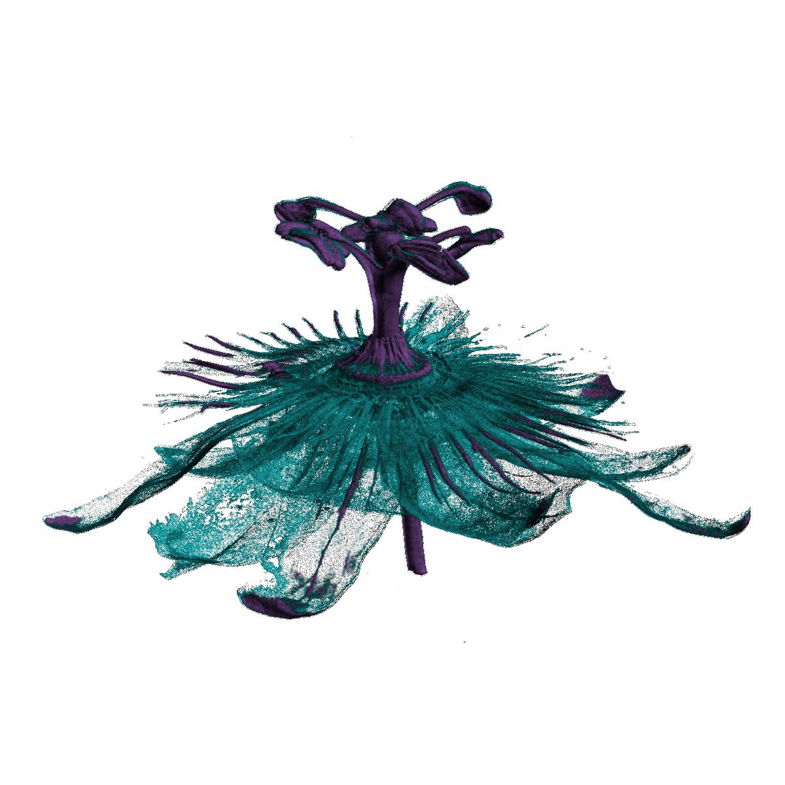

See the invisible. Nhìn thấu bên trong.
Sym-Tech builds compact, affordable X-ray micro-CT systems that reveal the internal structure of your samples in full 3D — at micrometre scale, without cutting, breaking or altering them.
Sym-Tech phát triển các hệ thống micro-CT X-quang nhỏ gọn, chi phí hợp lý, giúp hiển thị toàn bộ cấu trúc bên trong mẫu vật dưới dạng 3D — ở cấp độ micromet, không cần cắt, phá vỡ hay làm thay đổi mẫu.
European engineering, developed in VietnamKỹ thuật châu Âu, phát triển tại Việt Nam
Sym-Tech combines European engineering expertise with Vietnam's innovation ecosystem to develop a new generation of scientific imaging equipment.
High-resolution X-ray CT systems are usually expensive, complex to operate and out of reach for many laboratories and production sites. At the same time, demand for precise 3D internal inspection is growing quickly in materials science, electronics and advanced manufacturing.
Our answer is a compact, easy-to-use X-ray microscope for small and medium-sized objects — designed for research institutes, universities and industry in Vietnam and across Asia.
Sym-Tech kết hợp chuyên môn kỹ thuật từ châu Âu với hệ sinh thái đổi mới sáng tạo tại Việt Nam để phát triển thế hệ thiết bị hình ảnh khoa học mới.
Các hệ thống CT X-quang độ phân giải cao thường có giá thành cao, vận hành phức tạp và nằm ngoài tầm với của nhiều phòng thí nghiệm và cơ sở sản xuất. Trong khi đó, nhu cầu kiểm tra cấu trúc bên trong 3D chính xác đang tăng nhanh trong khoa học vật liệu, điện tử và sản xuất tiên tiến.
Giải pháp của chúng tôi là một kính hiển vi X-quang nhỏ gọn, dễ sử dụng cho các mẫu vật có kích thước nhỏ và trung bình — được thiết kế cho viện nghiên cứu, trường đại học và doanh nghiệp tại Việt Nam và khu vực châu Á.



3DLook inside — without opening anythingQuan sát bên trong — không cần mở mẫu
X-ray microscopy turns hundreds of X-ray images into a complete 3D model of your sample, inside and out.
Kính hiển vi X-quang chuyển hàng trăm ảnh X-quang thành một mô hình 3D hoàn chỉnh của mẫu, cả bên trong lẫn bên ngoài.
Non-destructiveKhông phá hủy
Your sample stays intact. Scan it again, test it further or return it to production.
Mẫu được giữ nguyên vẹn, có thể quét lại, thử nghiệm tiếp hoặc đưa trở lại sản xuất.
True 3D3D thực sự
Explore any virtual cross-section, from any angle, and measure features in three dimensions.
Quan sát mọi lát cắt ảo theo bất kỳ hướng nào và đo đạc các đặc điểm trong không gian ba chiều.
Micrometre detailChi tiết cấp micromet
Reveal cracks, pores, inclusions and assembly faults down to tens of micrometres.
Phát hiện vết nứt, lỗ rỗng, tạp chất và lỗi lắp ráp đến kích thước vài chục micromet.
Compact & accessibleNhỏ gọn & dễ tiếp cận
A cabinet-sized system that is easy to install and operate, at a fraction of the usual cost.
Hệ thống cỡ tủ, dễ lắp đặt và vận hành, với chi phí thấp hơn nhiều so với các giải pháp thông thường.
From sample to 3D insight in four stepsTừ mẫu vật đến dữ liệu 3D qua bốn bước
Mount the sampleĐặt mẫu
The object is placed on a precision rotation stage inside the shielded cabinet. No preparation, cutting or coating is needed.
Mẫu được đặt lên bàn xoay chính xác bên trong buồng che chắn. Không cần chuẩn bị, cắt hay phủ mẫu.
Acquire projectionsThu nhận ảnh chiếu
While the sample turns 360°, the detector records hundreds of 2D X-ray images from different angles.
Trong khi mẫu xoay 360°, đầu thu ghi lại hàng trăm ảnh X-quang 2D từ nhiều góc khác nhau.
Reconstruct in 3DTái tạo 3D
Reconstruction software combines all projections into a 3D volume made of millions of voxels (3D pixels).
Phần mềm tái tạo kết hợp toàn bộ ảnh chiếu thành một khối 3D gồm hàng triệu voxel (điểm ảnh 3D).
AnalysePhân tích
Slice, segment and measure: detect defects, quantify porosity and check dimensions and assembly.
Cắt lớp, phân vùng và đo đạc: phát hiện khuyết tật, định lượng độ xốp, kiểm tra kích thước và lắp ráp.

XRM-131 PreliminarySơ bộ
A scientific-grade 3D X-ray microscope in a compact cabinet. The XRM-131 uses geometric magnification to adapt resolution to your sample, and comes with a free software package for reconstruction and visualisation.
Kính hiển vi X-quang 3D đạt chuẩn khoa học trong một buồng máy nhỏ gọn. XRM-131 sử dụng phóng đại hình học để điều chỉnh độ phân giải theo từng mẫu, kèm theo gói phần mềm miễn phí cho tái tạo và hiển thị hình ảnh.
- Minimum voxel size 20–55 µmKích thước voxel tối thiểu 20–55 µm
- Scan area ∅30–100 mmVùng quét ∅30–100 mm
- Autonomous safety interlockKhóa liên động an toàn tự động
Fresh from our scannerMới nhất từ máy quét của chúng tôi
Every month we scan a new object with our prototype and share the result — an easy way to see what 3D X-ray microscopy can reveal.
Mỗi tháng, chúng tôi quét một vật mẫu mới bằng nguyên mẫu của mình và chia sẻ kết quả — cách đơn giản để thấy kính hiển vi X-quang 3D có thể khám phá những gì.
One instrument, many fieldsMột thiết bị, nhiều lĩnh vực
Wherever the inside of an object matters, X-ray microscopy gives answers that a surface view cannot.
Ở bất cứ nơi nào cấu trúc bên trong của vật thể là quan trọng, kính hiển vi X-quang mang lại câu trả lời mà quan sát bề mặt không thể có.

PLASTICSNHỰA
PHARMADƯỢC PHẨM
FOODTHỰC PHẨM
NATURETỰ NHIÊNA start-up with a working systemMột công ty khởi nghiệp với hệ thống đã hoạt động
Sym-Tech is in its start-up phase. Our prototype produces the scan results shown on this website, and we are now preparing the XRM-131 for its first users in research and industry.
Sym-Tech đang trong giai đoạn khởi nghiệp. Nguyên mẫu của chúng tôi đã tạo ra các kết quả quét được giới thiệu trên trang web này, và hiện chúng tôi đang chuẩn bị đưa XRM-131 đến những người dùng đầu tiên trong nghiên cứu và công nghiệp.
- Working prototype completedHoàn thành nguyên mẫu hoạt động First 3D scans of real samples.Những bản quét 3D đầu tiên trên mẫu thực.
- Imaging chain validatedXác thực chuỗi tạo ảnh System architecture, acquisition and reconstruction proven.Kiến trúc hệ thống, thu nhận và tái tạo ảnh đã được kiểm chứng.
- XRM-131: towards industrial-grade reliabilityXRM-131: hướng tới độ tin cậy cấp công nghiệp Ongoing optimisation of the first product.Đang tiếp tục tối ưu hóa sản phẩm đầu tiên.
- Early commercialisationGiai đoạn đầu thương mại hóa Building relationships with first users and partners.Xây dựng quan hệ với người dùng và đối tác đầu tiên.
Have a sample in mind?Bạn có mẫu vật cần kiểm tra?
Tell us what you would like to see inside. We are happy to discuss your samples, resolution needs and applications.
Hãy cho chúng tôi biết bạn muốn quan sát điều gì bên trong. Chúng tôi sẵn sàng trao đổi về mẫu vật, yêu cầu độ phân giải và ứng dụng của bạn.